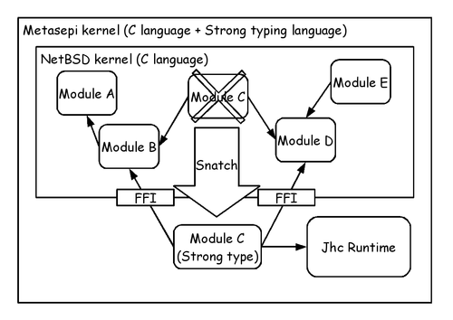
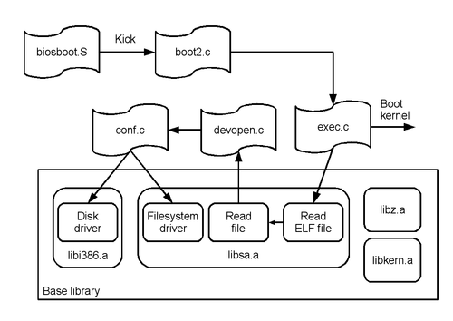
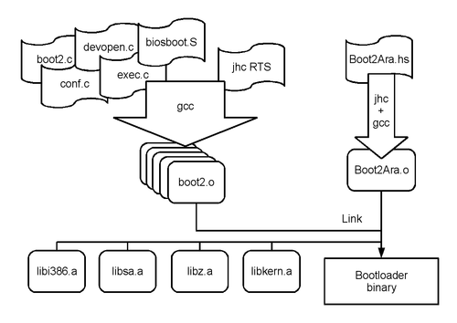
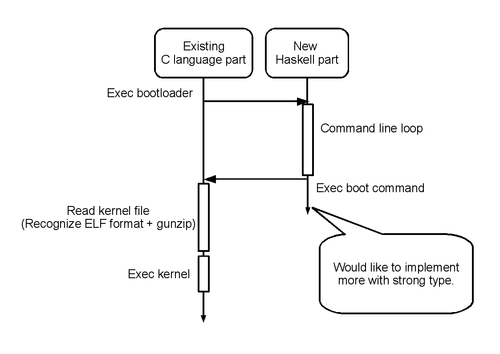

Can’t get design, even repeating the research. It might be a good idea to make something at first step? Let’s decide a rough sketch before writing the code. This blog entry will be rewritten some times.
We discuss “Are there OS designed with Haskell/OCaml?” already. The person living in real world has no time to get clean design of Functional OS, that be eaten as dog food. 1 It may be better than it to rewrite a just monolithic kernel with functional language.
We selected the NetBSD as a monolithic kernel for rewriting. There is my hobby simply reasons, such as easy-to-read source code.
The rewrite from scratch in typed language suddenly the NetBSD kernel written in the C language also is still severe. I want a little more comfortable? So but not all suddenly, and re-implement the same functionality in the typed language a little bit at a time while keeping a compilable / executable state. If you go with the type little by little, all the code I might be to work with typed language one day?

I think it tries to call the Arafura this design of “snatch little by little in the typed language NetBSD kernel”. That’s good to sail the name of the sea starting from “A”, the first! (Also, small squid to change the color is a type of cuttlefish, Metasepia pfefferi is lived, Arafura of the Portuguese, which means “free man” But. is the origin so the archaic word “shallow consisting of a coral reef in many cases, where a failure of navigation also have a large number” when you fail to sail in this sea if …) Yes, the sea that begins with “B” this time it’s okay if you choose (design). I’m “Never give up” the watchword!
We have known jhc may be useful to develop Metasepi kernel. If snatch NetBSD kernel, we should write interrupt handler with Haskell language. It’s so difficult for us, today. Then, let’s snatch bootloader that has more easy design than NetBSD kernel. Everything starts at training.

Structure of the module of NetBSD bootloader is as shown in the above figure. Following code is the boot2.c command line loop rewrited with jhc and Haskell language. 2
import Control.Monad
import Data.Maybe
import Data.Map (Map)
import qualified Data.Map as Map
import Foreign.C.Types
import Foreign.Ptr
foreign import ccall "glue_netbsdstand.h command_boot" c_command_boot :: Ptr
a -> IO ()
commands :: Map String (IO ())
commands = Map.fromList [("help", command_help),
("?", command_help),
("boot", c_command_boot nullPtr)]
command_help :: IO ()
command_help = putStr $ "\
\commands are:\n\
\boot [xdNx:][filename] [-12acdqsvxz]\n\
\ (ex. \"hd0a:netbsd.old -s\"\n\
--snip--
\help|?\n\
\quit\n"
main :: IO ()
main = do
putStrLn "Haskell bootmenu"
forever $ do
putStr "> "
s <- getLine
fromMaybe (putStr s) $ Map.lookup s commandsDisplay of help is as good Well, I’m throwing circle at FFI to existing code reads + boot kernel. Let’s compiled in such a way of utilizing these source code.

Let’s run Metasepi arafura version of bootloader on qemu (2:15 at following video)!
Starting the kernel and display of help seems to be. First I do not want to misunderstand earnestly by the way!’s Successful experiment, 99% of the bootloader that I made this time but that it’s still made by C language. It is as shown in the figure below and try to draw a sequence diagram the movement of this bootloader.

Part sorry! Bottom line remains the C language source code of existing what. But by repeating snatch little by little from now, be described in typed language like Haskell many parts of the sequence shown above and not something a dream?
Snatch of bootloader has just begun. Not yet snatch kernel, we can find many problems with snatching the small module such as bootloader.
Next action item is surveying more detail of jhc internel. But, more snatching this bootloader may be also good idea to understand more problems.
We can use extended memory (more than 1 MB) on Intel arch. But it’s useful running in conventional memory (less than 1 MB) for the other use case↩︎
blog comments powered by